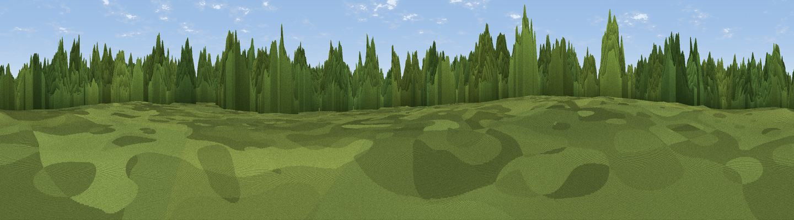

Galley Hill
#45268 in England · top 41% of its area beats it · near East WrethamWhere it is
The exact computed spot (TL 92419 92701). Click the marker for map links.
The view, rendered

A 360° render of this exact spot computed from the terrain model, tree cover and land cover — summer colours, afternoon light, calibrated against photographs of famous viewpoints. Real trees, hedges and buildings will differ in detail.
The panorama
Grey silhouette: terrain skyline in each direction (720 bearings, Earth curvature and refraction included). Dashed green: skyline with trees (+15 m) and buildings (+8 m) as obstacles. Blue strip: how far the ground is visible on each bearing.
Where the view opens
Wedge length = distance to the farthest visible ground on that bearing (vegetation-aware). Rings at 10, 25 and 50 km.
What fills the view
68% woodland · 18% cropland · 14% grassland ·
Angular shares of the visible panorama (visual magnitude), not map area. Landscape diversity 0.39 (0–1 Shannon).
Key numbers
More beautiful places nearby
The staircase of upgrades: each row has a higher view potential than everything closer. Driving times are estimates from straight-line distance, calibrated against real road routing — check an actual route before setting out.
| Place | Direction | Drive | Score |
|---|---|---|---|
| Ringmere Lookout | SSW · 5 km | ~11 min | 15.0 |
| Dunham Lodge | N · 21 km | ~35 min | 19.6 |
| Viewpoint near Middleton | NW · 33 km | ~51 min | 44.0 |
| Viewpoint near Sandringham | NNW · 43 km | ~63 min | 45.6 |
| Viewpoint near Burnham Market | N · 49 km | ~70 min | 49.2 |
| Viewpoint near Salthouse | NNE · 52 km | ~73 min | 65.4 |
| Viewpoint near Weybourne | NNE · 53 km | ~74 min | 68.3 |
| Viewpoint near Belvoir | WNW · 117 km | ~142 min | 70.8 |
52.49826, 0.83323 · source: osm peak · position refined by local search. Computed location — check access rights before visiting.